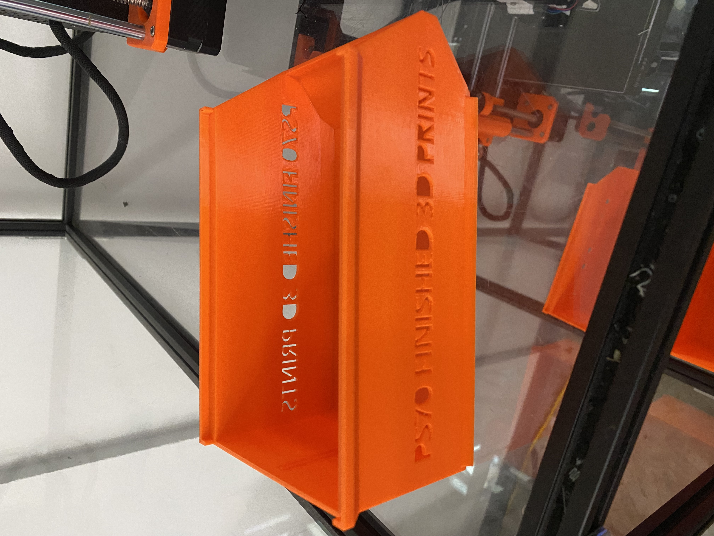
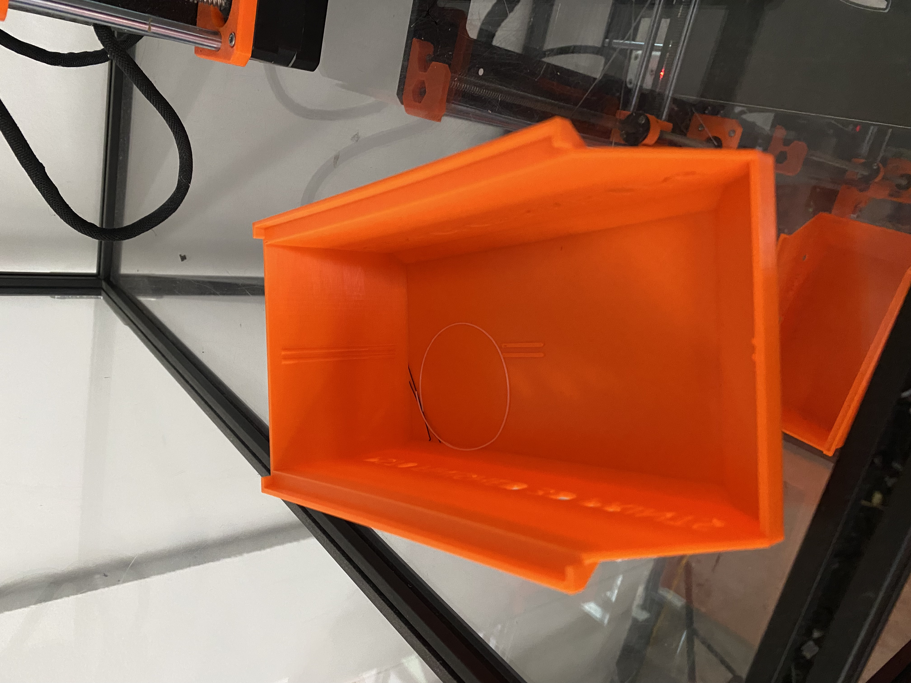

<div class="textcontainer">
<p class="margin"> </p>
<h3>Week 3.1: 3D Design & Printing</h3>
<h4>Assignment: Model and 3D print something</h4>
For this assignment, we were required to 3D print a component for our final project or a small object not made by subtractive methods. Therefore, I decided to 3D print a miniaturized version of a fan for my portable biological incubator. The image on the top left corner is the fan itself; however, since it was scaled down to print ~10 minutes, the fan and support cast are essentially one industinguishable unit. On the other hand, the shell and grill for the fan were able to be scaled down without design flaws—which are pictured in the bottom row. Lastly, the one concern that I found when using PrusaSlicer is that once I generate the gcode for the object, then I must document its exact dimensions because I'm not able to access that information once the scale of an object is manipulated. As a result, even though I got lucky and was able to fit the fan inside of the shell, the fan grill was too large for the shell.
<p class="margin"> </p>
<div class="center-colum">
<img src="./p.jpeg" alt="Circuit Diagram" width="500">
<img src="./p1.jpeg" alt="Circuit Diagram" width="500">
<img src="./p2.jpeg" alt="Circuit Diagram" width="500">
<img src="./grill.jpeg" alt="Circuit Diagram" width="500">
<br>
<a download href='./gcode.zip'>Download my Zip File for the G-Code of the Fan Components</a>
<br>
<h4>Assignment: RevoPoint Scanner</h4>
For the second portion of the assignment requirements, we were tasked with scanning an object using the RevoPoint Scanner. Frankly, this task was easier said than done. At first, I wanted to scan the 3D printed fan blade but discovered that the black fillament was unreadable by the scanner. Thereafter, I tried to scan my airpods case but also found that the glossy material on the case wasn't ideal for the scanner. As a result, I scanned the 3D printed holding buckets since the material was bright and coarse. However, I believe it took me well over 20 minutes of scanning to finally achieve a result that was acceptable since the scanner would sometimes duplicate parts of the bucket.
<p class="margin"> </p>
<div class="center-colum">


<br>
<a download href='./adrian_final.obj.zip'>Download my OBJ Zip File of the RevoPoint Scanner </a>
<br>
<h4>Assignment: Final Project Update with Timeline, Goals, and Required Material</h4>
Here is an update on my final project ambitions for the portable biological incubator.
</div>